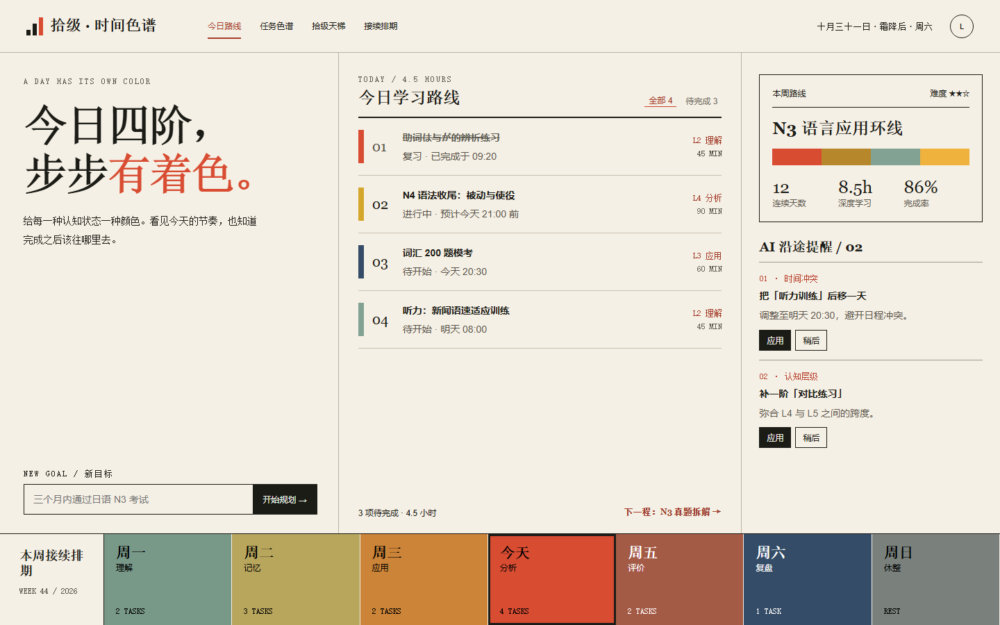
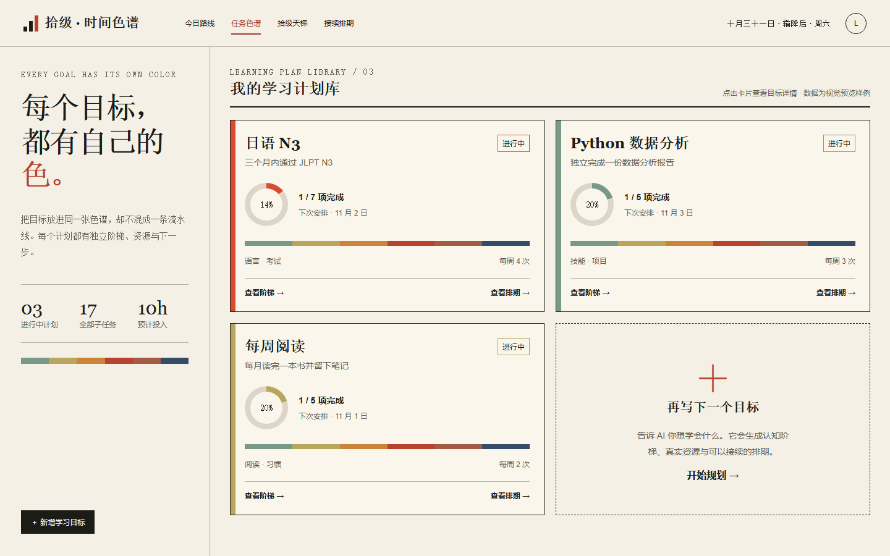
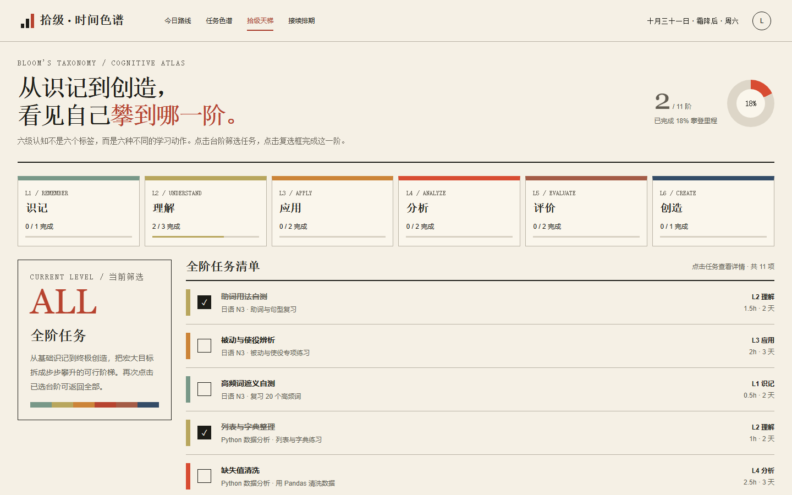
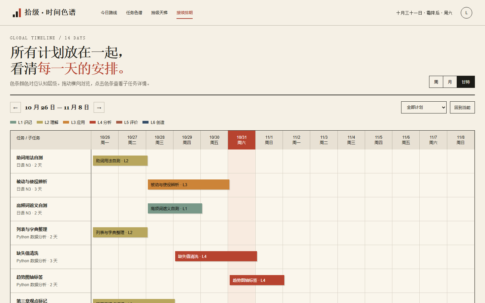

从今天的执行，到目标库、认知阶梯与全局排期。四页共用一套色彩语义，但各自采用最适合内容的版式。

今日四阶、目标输入、AI 沿途提醒和底部七日接续排期。已支持任务详情、完成、跳过、顺延与筛选。

三个真实学习目标、进度环、认知色谱和下一安排。点击卡片查看目标详情，也可直接进入阶梯或排期。

六级台阶与十一项子任务。点击层级筛选，点击复选框完成任务，整体进度会同步更新。

十四天甘特色条、今日列与六级图例。支持计划筛选、色条详情、周期切换和横向拖动浏览。